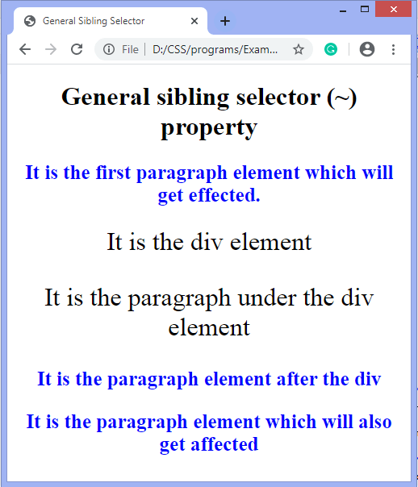
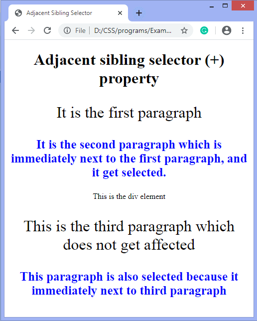
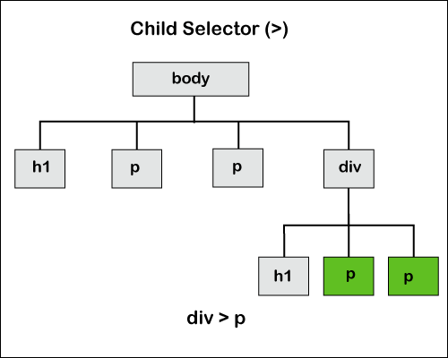

CSS Combinators
CSS Combinators clarifies the relationship between two selectors, whereas the selectors in CSS are used to select the content for styling.
There can be more than one simple selector in a CSS selector, and between these selectors, we can include a combinator. Combinators combine the selectors to provide them a useful relationship and the position of content in the document.
There are four types of combinators in CSS that are listed as follows:
- General sibling selector (~)
- Adjacent sibling selector (+)
- Child selector (>)
- Descendant selector (space)
General Sibling Selector (~)
It uses the tlide (~) sign as the separator between the elements. It selects the elements that follow the elements of first selector, and both of them are the children of the same parent. It can be used for selecting the group of elements that share the common parent element.
It is useful when we have to select the siblings of an element even if they are not adjacent directly.
Syntax
element ~ element {
/*style properties*/
}
Suppose we have to select all <p> elements that are the siblings of <div> element, then we can write it as:
div ~ p {
/*style properties*/
}
The figure given below helps us to understand the General sibling selector (~).

In this figure, the blocks with the green color are the selected blocks affected after using the general sibling selector.
Example
In this example we are selecting the <p> elements that come after the<h1>. There is a <div> element which will not get selected and the paragraph element inside the div will also not get selected. But those <p> elements that come after the <div> will be affected.
This example will illustrate the use of a General sibling selector (~).
<!DOCTYPE html>
<html>
<head>
<title>General Sibling Selector</title>
<style>
body{
text-align: center;
}
h1 ~ p{
color: blue;
font-size: 25px;
font-weight: bold;
text-align: center;
}
div {
font-size: 32px;
}
</style>
</head>
<body>
<h1>General sibling selector (~) property</h1>
<p>It is the first paragraph element which will get effected.</p>
<div> It is the div element
<p> It is the paragraph under the div element </p>
</div>
<p>It is the paragraph element after the div</p>
<p>It is the paragraph element which will also get affected</p>
</body>
</html>
Output
Adjacent Sibling Selector (+)
It uses the plus (+) sign as the separator between the elements. It matches the second element only when the element immediately follows the first element, and both of them are the children of the same parent. This sibling selector selects the adjacent element, or we can say that the element which is next to the specified tag.
It only selects the element which is just next to the specified first element.
Syntax
element + element {
/*style properties*/
}
If we have to select the paragraph that comes immediately after another paragraph, then by using the adjacent selector, it will be written as follows:
p + p {
/*style properties*/
}
The figure given below helps us to understand the Adjacent sibling selector (+).

In this figure, the blocks with the green color are the selected blocks affected after using the adjacent sibling selector. There is the selection of those paragraph elements that immediately comes after another paragraph element.
Example
In this example we are selecting the <p> element that comes immediately after the <p> element. There is an <div> element that will not be selected, and the paragraph element after the div will also not be selected. But the <p> element that comes just next to the third paragraph will be affected.
This example will illustrate the use of Adjacent sibling selector (+).
<!DOCTYPE html>
<html>
<head>
<title> Adjacent Sibling Selector </title>
<style>
body{
text-align: center;
}
p + p{
color: Blue;
font-size:25px;
font-weight: bold;
text-align: center;
}
p {
font-size: 32px;
}
</style>
</head>
<body>
<h1> Adjacent sibling selector (+) property</h1>
<p> It is the first paragraph </p>
<p> It is the second paragraph which is immediately next to the first
paragraph, and it get selected. </p>
<div> This is the div element </div>
<p> This is the third paragraph which does not get affected </p>
<p> This paragraph is also selected because it immediately next to third
paragraph </p>
</body>
</html>
Output
Child Selector (>)
It uses the greater than (>) sign as the separator between the elements. It selects the direct descendant of the parent. This combinator only matches the elements that are the immediate child in the document tree. It is stricter as compared to the descendant selector because it selects the second selector only when the first selector is its parent.
The parent element must always be placed at the left of the ">". If we remove the greater than (>) symbol that designates this as a child combinator, then it will become the descendant selector.
Syntax
element > element {
/*style properties*/
}
If we have to select the paragraph elements that are the children of <div> element then by using the child selector, it will be written as follows:
div > p {
/*style properties*/
}
The figure given below helps us to understand the child selector (>).
In this figure, the blocks with the green color are the selected blocks affected after using the child selector. As we can see in the figure, there is only the selection of those paragraph elements that are the direct child of the div element.
Example
In this example we are selecting the <p> elements that are the child of a <div> element. It only selects those paragraph elements that are the direct child of the div element.
This example will illustrate the use of the child sibling selector (>).
<!DOCTYPE html>
<html>
<head>
<title> Child Selector </title>
<style>
body{
text-align: center;
}
div > p{
color: Blue;
font-size:25px;
font-weight:bold;
text-align:center;
}
p {
font-size: 20px;
}
</style>
</head>
<body>
<h1> Child selector (>) property</h1>
<p> It is the first paragraph </p>
<p> It is the second paragraph </p>
<div>
<h1>This is the div element</h1>
<p> This is the third paragraph which is the child of div element </p>
<p> This is the fourth paragraph and also get selected because it is also
the child of div element </p>
</div>
</body>
</html>